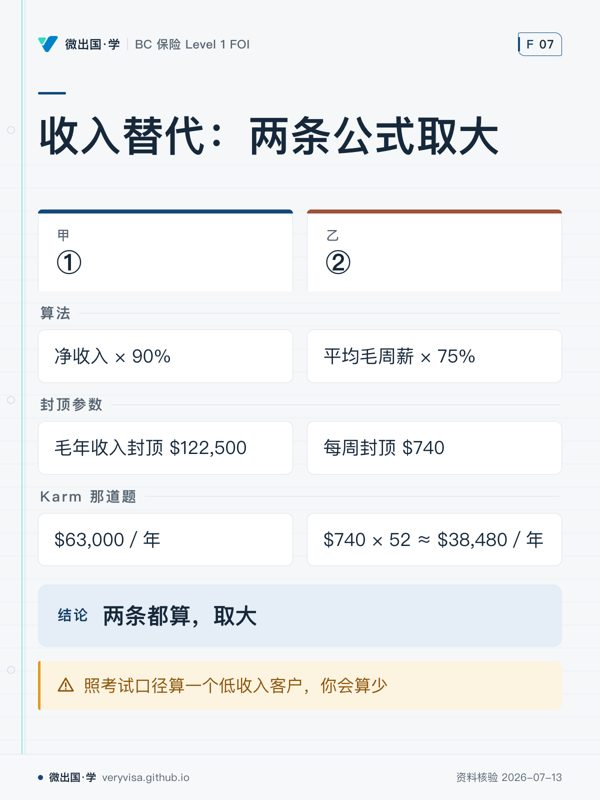

BC 在 2021 年 5 月 1 日做了一件别的省没做过的事：把车祸人伤的赔付，从打官司争一个数， 换成按法规查一个数。这一换，整个行业的争议焦点跟着搬了家—— 以前争的是「谁的错、痛苦值多少钱」，现在争的是「你属于哪一档、该套哪条公式」。
所以这一讲不背金额表。金额每年 4 月 1 日全换一遍，背了明年就是错的。 这一讲讲的是那张表是怎么长出来的：三部法规怎么分工、谁先掏钱、公式在哪里分叉、 以及哪些行为会让已经算好的钱被减掉。
ℹ️
本讲的数字全部是 2026-04-01 快照
出处是 ICBC《Your guide to Enhanced Accident Benefits》与经纪版《Reference Guide CL517 (042026)》。 凡带 $ 的地方都写了年份——这是本库从 那次翻车里换来的纪律： 指数化的数字没有唯一真值，只有「哪一年」。
一、先看骨架：一个 Enhanced Care，三部法规
考试和实务都容易把 Enhanced Care 当成一个整体。它不是。 它是 Insurance (Vehicle) Act（RSBC 1996 c.231）下面三部并列的法规，各管一段：
| 法规 | 管什么 | 缩写 |
|---|---|---|
| Enhanced Accident Benefits Regulation | 医疗、康复、护理、家属照护、死亡给付、灾难性伤害 | EAB |
| Income Replacement and Retirement Benefits and Benefits for Students and Minors Regulation | 收入替代、退休收入、学生与未成年人 | IRB |
| Permanent Impairment Regulation | 永久伤残一次性给付，以及「灾难性伤害」的定义 | — |
为什么要拆三部？ 因为这三段钱的性质完全不同： EAB 报的是已经花掉的账单（收据制），IRB 补的是没能挣到的收入（周期给付制）， 永久伤残赔的是身体的不可逆损失（一次性）。三种性质对应三套证明责任、三套时间节奏。 拆开写，才可能各自设各自的上限与触发条件。
⚠️
「Enhanced Care 医疗无上限」是对的，但它只覆盖三部里的一部
Enhanced Accident Benefits（EAB）整体没有总上限——原文： "EAB does not have an overall maximum limit"。这是这套制度最大的卖点，也是最容易被过度延伸的一句。 它说的是 EAB 这一部里的医疗、假肢矫形、医疗设备、药品耗材确实标着 Unlimited。 但收入替代有毛收入封顶、永久伤残有金额上限——那两样根本不在 EAB 这部法规里。 跟客户说「无上限」而不分部，等他撞上收入替代的天花板时，你就是那个说错话的人。
二、谁先掏钱：first payer 与 last payer
这是考试口径讲了一半、而实务里第一通电话就要用到的一条。
考试口径（增补册）确实写了收入替代这一侧：这些给付 "come second to any other wage-loss benefits such as employer disability plans, WorkSafeBC benefits, and employment insurance" ——排在雇主伤残计划、WorkSafeBC、EI 之后。
ICBC 经纪版参考手册 CL517 把它形式化成两个词，并且逐项标注：
| 含义 | 哪些给付 | |
|---|---|---|
| First payer（第一付款人） | ICBC 先赔，你不用先去找别家 | 医疗、假肢矫形、医疗设备、永久伤残 |
| Last payer（最后付款人） | 你得先向其他来源索赔，差额才交给 ICBC | 收入替代、退休给付、学生与未成年人给付 |
⚠️
同一个 Enhanced Care 里，两种付款规则并存
学的时候容易记成「ICBC 反正殿后」。不对——医疗那一侧 ICBC 是第一付款人， 收入那一侧才是最后付款人。CL517 的表里 income replacement 明写 First Payer: No， 而 medical equipment 那几行写的是 Yes。 判断题最爱在这里设陷阱：给一个医疗费的场景，问「客户应先向雇主计划索赔吗」——答案是不用。
「先赔」还有三个例外，考试口径完全没有。原文：ICBC pays first, unless it is a claim involving WorkSafeBC、a self-insured federal vehicle、 或 a non-BC government vehicle。撞上这三种，ICBC 一律退回最后付款人。
🔧
WorkSafeBC 那条不是形式条款
上班途中或工作中出的车祸，WorkSafeBC 与 ICBC 会同时在场。规则是： "Your ICBC benefits will only apply if they provide a greater benefit than what you're eligible to receive from WorkSafeBC." ——ICBC 只补高出来的那一截。所以受伤者不是「可以挑一家」，是两边都要走，ICBC 补差。
实务：前 12 周先把治疗接上
事故后前 12 周，为车祸伤情康复所需的物理治疗、脊椎治疗、注册按摩治疗、心理咨询、针灸和运动康复可走预批准；指南也列有心理学家治疗。 这些预批准项目无需医生处方或转介，也无需另等 ICBC 事先批准。先报案取得理赔编号，就诊时备好个人健康号码（PHN）与理赔编号。 这里免的是预批准项目的转介手续，不能推成所有医疗项目都免处方。
预批准仍有项目次数与费率限制。预约时确认诊所能否直接向 ICBC 结算、是否有自付差额；超出预批范围或 12 周后仍需治疗的，请治疗人员与康复专员安排额外批准。 依据：ICBC 指南 p.4–5（ICBC）与前 12 周治疗页（ICBC）。
三、收入替代：考试口径给了一条公式，现行制度有两条
这是本讲最该慢读的一节，也是本库这一轮挖出来的最实的一处错位。
考试口径的算法（增补册）只有一条：净收入 × 90%， 并用 Karm 收尾——年薪 $100,000、税后净收入 $70,000 → 90% × $70,000 ＝ $63,000／年。
ICBC 现行指南的算法有两条，取其大者：
| 公式 | 2026-04-01 参数 | |
|---|---|---|
| ① | 净收入 × 90% | 毛年收入封顶 $122,500 |
| ② | 平均毛周薪 × 75% | 每周封顶 $740 |
原文写得毫不含糊："You will receive the greater benefit amount of either calculation method."
⚠️
Karm 那道题的答案是对的，但推理是残缺的
用两条公式各算一遍：①＝$63,000／年；②＝$740 × 52 ≈ $38,480／年。第一条赢，$63,000 没错。 问题在于换一个客户就不一定了。 $740／周 × 52 ≈ $38,480 是第二条的天花板， 也就是说，只有净年收入低于约 $42,756 的人才有可能由第二条胜出——还要看他的毛周薪 × 75% 是否真的高于净收入 × 90%（净收入占毛收入的比例越低，第二条越可能赢）。$42,756 是必要条件，不是充分条件。 考试口径挑的例子恰好落在第一条占优的区间，于是这个分叉在考试口径里从头到尾不会显形。 照考试口径算一个低收入客户，你会算少——而且算得理直气壮。
✕
考场答考试口径，柜台答现行
考试口径：净收入 × 90%。题目按这个口径出，答第二条公式反而会错。 实务口径：两条都算，取大。 这是本库的 R16 双口径纪律。两个口径写在一起不是啰嗦，是因为 只记一个的人，一定会在另一个场合说错话。
上限那个数：先问哪一年，再问多少
$122,500 这个数在本项目里有过四个兄弟，而它们全都对过：
| 数值 | 是哪一年的 | 出处 |
|---|---|---|
| $100,000 | 2021-05-01 起始值 | B.C. Reg 60/2021 s.2(2) |
| $109,000 | 考试口径当年值 | FOI Autoplan 增补册，且考试口径明说这个金额不考 |
| $119,000 | 2025 年值 | ICBC 指南 APG20Q (032026) |
| $122,500 | 2026-04-01 起 | ICBC《Your guide to EAB》p.16 |
机制在 B.C. Reg 60/2021 s.2：每年按工业平均工资指数上调，进位到 $500 的倍数，4 月 1 日生效。
ℹ️
「哪个数对」经常是问错了问题
ICBC 自己的网页至今还有页面写 $119,000。那不是网站出错，是各页更新不同步。 看到任何一个金额，第一反应应该是「这是哪一版」，不是「这个数对不对」。 超出上限的客户可以加买 Income Top-Up（$10,000 一档，最多加购 $100,000）。
起算与终止
- 起算：事故后第 8 天（等待期 7 天）。
- 发放：每两周一次。
- 终止：复工／转为退休收入给付／因不履行法规义务被终止。
四、永久伤残：按百分比去分一个上限
考试口径说对了机制的一半——金额由伤害类型与永久损害程度决定，依据是 Permanent Impairment Regulation 的附表。考试口径没有给任何金额，也没说清那个百分比拿去乘什么。
现行指南把两件事补齐了：
| 伤害类别 | 上限（2026-04-01） | 怎么算 |
|---|---|---|
| 非灾难性 | 最低 $992，最高 $198,805 | 评定一个伤残百分比，× 最高额 |
| 灾难性（catastrophic） | $313,918 | 符合定义者一律拿满额，不再按比例折算 |
官方举例：伤残评定为 50% 的人，拿的是 50% × $198,805。
⚠️
那个百分比乘的是上限，不是乘你的收入，也不是乘医疗花费
这是最常见的理解错误。永久伤残给付与「你花了多少医疗费」「你月薪多少」完全无关—— 它赔的是身体的不可逆损失本身。一个从不上班的人和一个年薪百万的人， 同样的伤残等级，拿同样的钱。
⚠️
灾难性与非灾难性是两个上限，不是同一个上限里的高低档
容易记成「最高 $198,805，灾难性的话往上到 $313,918」。不是。 它们是两条独立的路：灾难性伤害（四肢瘫 quadriplegia、截瘫 paraplegia、 严重脑损伤、失明等，定义写在 Permanent Impairment Regulation 里）直接给满额， 不走百分比那一套。
五、未成年人与学生：赔的是「没能读完的那一年」
这一块考试口径几乎没有，而它的逻辑很清楚：小孩没有收入可替代，那就替代他的学业进度。
| 对象 | 给付（2026-04-01） |
|---|---|
| 幼儿园 – Grade 8 | $6,758／学年 |
| Grade 9 – Grade 12 | $12,525／学年 |
| 高中生（19 岁以上在读） | 最高 $12,525／年 |
| 大专院校学生 | $25,049／年 |
三条规则跟着：
- 学年的定义是 7 月 1 日至次年 6 月 30 日，一次性给付在失去的那个学年之后的 7 月 1 日才付。
- 只丢了一个学期的，按比例折算（三学期制丢一学期＝三分之一）。
- 未成年人满 18 岁那年的 7 月 1 日起，若仍无法工作或复学，转为按 BC 工业平均工资（Industrial Average Wage）计算收入替代——2026-04-01 为 $67,762.08。
ℹ️
未缴学费高于给付额的，可改为报销学费
原文：if you have tuition that is not reimbursed and that amount is greater than the loss of studies amount, 可以改走学费报销。这是个容易漏掉的选择权。
六、家属照护给付：同一张表，两个年份
Caregiver Benefit 给的是事故前无偿照护他人（16 岁以下儿童，或长期无法工作的人）而现在照护不了的人。 这一项考试口径有，而且是对照年份差异的最好样本：
| 照护人数 | 考试口径当年值（每周） | 2026-04-01 现行值（每周） |
|---|---|---|
| 1 人 | $636 | $692 |
| 2 人 | $691 | $753 |
| 3 人 | $745 | $812 |
| 4 人及以上 | $783 | $853 |
ℹ️
这里没有任何一方是错的
结构一模一样（四档、按人数递增），差的只是年份。考试口径自己就写明这些金额不会考。 把它放在这里，是因为它是「指数化 ≠ 有对错」这条规律最干净的例子—— 你在别处看到两个不一样的 ICBC 金额时，第一猜想应该是这个。
两条边界：
- 孩子满 16 岁，针对该孩子的照护资格即终止（除非该人因任何原因长期无法就业）。
- 同一个被照护人只能由一个人领取每周给付。
- 事故后 0–180 天内，兼职照护者可同时领收入替代与照护给付；第 181 天起要二选一。
七、给付会被减发甚至停发——「无过失」不等于「怎么都赔」
这是 Enhanced Care 最容易被讲错的地方。no-fault 的准确含义是「不打官司」，不是「行为不影响赔付」。
刑事定罪（Criminal Code 指定罪行）会削减给付，但范围是有限的：
✕
定罪只削减三项：收入替代、永久伤残、死亡给付
官方原文紧跟着一句："There is no impact to any other benefits." ——也就是医疗与康复照赔。 另有一类罪行，收入替代只在事故后头 12 个月减发，减多少看两个因素：过失与受供养人数。 在美国被定罪，与在加拿大定罪同等对待。
除刑事定罪外，下列行为同样会导致给付减少、暂停或终止：
- 明知而提供虚假或不准确信息
- 无正当理由拒绝提供资料，或拒绝授权 ICBC 调取资料
- 无正当理由拒绝复工、擅自离职、或拒绝新工作
- 拒绝、疏于接受或干扰 ICBC 要求的医疗检查
- 故意拖延自己的康复
- 拒不参加 ICBC 提供的康复计划
- 阻挠 ICBC 向造成损失的第三方追偿
🔧
这一串是跟客户解释 no-fault 时必须补的话
只说「不问责任、人人有赔」是误导。准确的说法是： 医疗那一侧确实不问责任；钱那一侧问行为。
八、不服怎么办：两条路，一条在 ICBC 内，一条在 ICBC 外
| 路径 | 是什么 | 关键性质 |
|---|---|---|
| Claims Decision Review（CDR） | ICBC 内部复议，由 Fair Practices Office 主持 | 与理赔部门分设；通常一个月内书面回复 |
| Civil Resolution Tribunal（CRT） | 独立于 ICBC 的裁决机构 | 裁决有强制力；不服可请 BC 最高法院司法复核 |
另有 Fairness Officer（审查 ICBC 的政策与流程）与 BC Ombudsperson（省级独立法定机构，免费）。
ℹ️
CRT 是这套制度里「诉权」的替代品
Enhanced Care 拿走了大部分侵权诉讼权，但没有把争议渠道一并拿走—— 它把争议从「法院打官司争赔偿额」搬到了「行政裁判所争资格与档次」。 理解这一点，才理解为什么整套制度要写得这么细：没有陪审团裁量，就必须靠法规穷举。
仍可起诉的例外：先看对象，再看事故地
受伤者若遇到肇事司机因特定 Criminal Code 罪行被定罪，例如酒驾，仍可能就部分损害提出民事索赔；只有被指控、或一般交通违章，都不能直接当成这项例外。ICBC 法律行动页明确限定了定罪与损害范围（ICBC）。
ICBC 的制度说明 p.12（2021-07-05 版，ICBC）还列出以制造商身份行事的车辆制造商、以维修服务经营者身份行事的修理厂等，例如制造或维修缺陷造成、促成事故。这里保留的是特定损害的请求，如痛苦与苦难等非金钱损害、惩罚性损害；不能据此承诺所有损失都能向这些对象追讨。
省外事故还要查事故地法律。该说明 p.17 以当地允许起诉为前提，因此「出了 BC 就一定能告」也不成立。实际遇到这些情形，应带事故地、定罪结果或缺陷资料核实可诉对象与请求范围。
九、两条会决定你明年工作量的机制
| 机制 | 原文要点 | 后果 |
|---|---|---|
| 每年 4 月 1 日按 CPI 调整 | ICBC 每年 4/1 调整费率与给付上限；政府至少每 5 年须启动一次复审 | 本讲所有金额明年 4 月 1 日全部作废 |
| 180 天报销时限 | 费用发生后须在 180 天内提交收据 | 过期即失权，与赔不赔无关 |
✕
180 天是硬期限
它不是"建议尽快"，是资格条件。客户攒了一年收据再来找你，前半年的已经没了。
术语对照
| 中文 | 英文 | 读音／缩写 | 一句话 |
|---|---|---|---|
| 加强照护 | Enhanced Care | — | 2021-05-01 起的 BC 车祸人伤体系 |
| 加强事故给付 | Enhanced Accident Benefits | EAB | 医疗康复那一部法规 |
| 收入替代给付 | Income Replacement Benefit | IRB | 两条公式取大的那一项 |
| 永久伤残 | Permanent Impairment | /ɪmˈpeərmənt/ | 按百分比分上限的一次性给付 |
| 灾难性伤害 | Catastrophic Injury | /ˌkætəˈstrɒfɪk/ | 定义在 Permanent Impairment Regulation |
| 第一付款人 | First Payer | — | ICBC 先赔（医疗侧） |
| 最后付款人 | Last Payer | — | 先找别家、差额归 ICBC（收入侧） |
| 家属照护给付 | Caregiver Benefit | — | 按被照护人数分四档的每周给付 |
| 失学给付 | Loss of Studies Benefit | — | 赔「没读完的那一学年」 |
| 收入加买 | Income Top-Up | — | 超出封顶部分的可选补充 |
| 理赔决定复议 | Claims Decision Review | CDR | ICBC 内部，Fair Practices Office 主持 |
| 民事裁决庭 | Civil Resolution Tribunal | CRT | 独立于 ICBC，裁决有强制力 |
| 工业平均工资 | Industrial Average Wage | — | 未成年人转收入替代时的计算基准 |
自查四问
- 收入替代有几条公式？ 考试口径一条、现行两条取大——两个口径分别用在哪？
- ICBC 对哪些给付是第一付款人？ 说得出医疗侧与收入侧的分界，以及三个例外。
- 永久伤残的百分比乘的是什么？ 不是收入，不是医疗费。灾难性走的是另一条路。
- 刑事定罪之后，哪一项给付不受影响？
本板块题库现有 134 题，其中练习池 68 题、模考专属池 66 题。
案例分析
以下为自撰演算，金额沿用本页 2026-04-01 快照；为看清规则，先假定各案例满足所述给付资格。
全责重伤，先分开算三笔钱
BC 居民小张单车撞树并承担全部责任，重伤后无法工作。假设没有刑事定罪或其他减停事由，且没有其他收入替代来源，他仍按适用条件获得事故所需的医疗与康复给付；全责本身不会取消照护资格（ICBC）。医疗康复无总上限，具体费用仍须符合承保条件。
再假设他的毛年收入未超过基本保障上限、事故前净年收入为 $60,000：公式①为 $60,000 × 90% ＝ $54,000／年；公式②最多为 $740 × 52 ＝ $38,480／年，因此本例取①。这里算的是年化水平，实际从第 8 天起算、每两周发放，不能把 $54,000 当作事故当年必领的总额。
若伤残评定确认符合灾难性伤害定义，永久伤残给付按本页快照为 $313,918。关键是评定符合定义，不能仅凭「重伤」二字承诺满额（ICBC）。
高收入加购，抬高的是计算收入的天花板
李医生的毛年收入超过 $122,500，评估其他收入保障后决定事前购买 Income Top-Up。每档 $10,000、最多加购 $100,000；购买 n 档时，加购额＝n × $10,000，计算用毛年收入天花板＝$122,500 ＋ 加购额。n 为正整数，且加购额不得超过 $100,000。
这能让更多收入进入给付计算，不能直接把毛年收入乘 90% 当作赔款。要复算实际给付，还须有净收入与其他给付资料；本例没有这些输入，便不虚构「停工半年能领多少」（ICBC（1、2））。
工作中受伤，先确认两边资格再协调
小王送货时出车祸，假设 WorkSafeBC 已确认属于承保工伤，他也符合 ICBC 给付资格。此时 ICBC 按最后付款人处理；先确认 WorkSafeBC 可得的给付，再比较 ICBC 的对应给付，只有较高部分才由 ICBC 补足（ICBC p.16）。
两边资料都要交齐，也要把已得或应得给付告知对方。不能把两份全额相加，也不能把这项协调补差叫作李医生购买的 Income Top-Up：前者处理不同给付来源，后者是事前购买的可选保障。
本页知识卡
不看正文也能拿到这一节的核心内容：先看导读，再看图。点图放大，左右翻页。
- 先看先把医疗场景和收入场景分开看，别把整套规则记成一个顺序。
- 易漏工作中出车祸时，WorkSafeBC 与 ICBC 会同时在场；两边都要走，后者只补高出来的一截。
- 下一步去讲解，用医疗费与工资损失各做一次判断。

- 先看先看中间一行的上限，再看两种算法在示例中的差距。
- 易漏Karm 只是一个算例；换收入水平后，较大的一式可能改变，考场与柜台口径也不同。
- 下一步去练习，拿另一组收入资料各算一遍后再比大小。